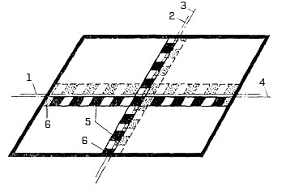
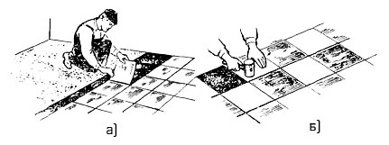

-

8(0152)31-25-61
-

kst@ggkst.by
-

http://ggkst.by
8(0152)31-25-61
kst@ggkst.by
http://ggkst.by
Карта 12: Покрытие полов синтетическими плитками
Состав технологических операций. Очистка и обеспыливание основания; огрунтовка основания; разметка положения маячных рядов; нанесение мастики;
наклейка плиток.
Механизмы, инструменты, приспособления, инвентарь. Вакуумно-щеточная машина. Каток СО-162; электроподогреватель (для работ при температуре
в помещении ниже 10°С). Волосяная щетка; стальные штыри; молоток; шпатель со сменными полотнами; зубчатый шпатель; гильотинные ножницы; резиновая киянка;
разметочный шнур в корпусе; рулетка или складной метр; контрольная двухметровая рейка; уровень.
Конусные ведра; ванночка с сеткой для отжатия кисти. Тележка со сменными контейнерами. Защитные очки; респиратор; рукавицы или резиновые перчатки;
резиновая обувь.
Материалы. Поливинилхлоридные плитки ПВХ (ГОСТ 16475-81). Битумно-скипидарная мастика «Биски» и битумно-синтетический клей «БСК».
Битумная грунтовка (раствор битума в бензине 1 : 2 или 1 : 3). Расход грунтовки - 300 г на 1 м2.
Составы мастик, мас. ч.
| «Биски» 65 | «БСК» 60 | |
| Битум БН 70/30 | 65 | 60 |
| Скипидар | 5 | - |
| Уайт-спирит | 22 | 17 |
| Резиновый клей | 3 | 3 |
| Канифоль (сосновая) | - | 10 |
| Портландцемент марки 400 | 5 | 5 |
Схема организации рабочего места. Рабочее место организуют так, как показано на рис. 1. Укладывают плитки захватками в один - два ряда,
двигаясь по направлению к выходу из помещения. Электроподогреватель располагают или в помещении, где настилают покрытие, или в смежном помещении,
при этом подогретые плитки подносят к месту укладки в пачках, чтобы они не успевали остыть.
В помещении должна быть вентиляция для удаления паров растворителей, содержащихся в мастике или клее.
Рис. 1. Схемы организации рабочего места при покрытии полов синтетическими плитками: а - при огрунтовке основания битумной мастикой, б - при укладке поливинилхлоридных плиток способом «на себя»; 1 - направление огрунтовки, 2 - полосы-захватки, 3 - рабочее место плиточника, 4 - ванночка с мастикой, 5 - маячный ряд, 6 - слой мастики, 7 - стопки плиток
Последовательность выполнения технологических операций. Работу начинают после выравнивания основания (по уровню) и устранения отдельных
дефектов поверхности.
Очистка и обеспыливание основания. С помощью скребка (рис. 2, а) основание очищают от грязи и брызг раствора. Пыль с поверхности удаляют
подметально-пылесосной машиной (рис. 2, б), пылесосом (рис. 2, в). С помощью шланга со сменными насадками удаляют пыль из углов,
пристенных участков и других труднодоступных мест.
Огруитовка основания. Обеспыленную поверхность грунтуют раствором битума в бензине с помощью волосяной кисти (рис. 3).
Щетку (кисть) погружают в грунтовку, отжимают излишки грунтовки о сетку ванночки и наносят параллельными полосами, перекрывающими друг друга.
Щетку прижимают под углом 60…65° к основанию, нанося тонкий слой грунтовки. После огрунтовки основание сохнет в течение 5…10 ч.
Рис. 2. Очистка и обеспыливание основания: а - очистка от остатков схватившегося раствора скребком, б - обеспыливание подметально-пылесосной машиной, в - то же, промышленным пылесосом; 1 - фильтр, 2 - захват, 3 - моторно-вентиляторный блок, 4 - мусоросборник
Разметка положения маячных рядов (рис. 4, а). Через середину коротких сторон помещения закрепляют продольную ось. Затем рулеткой определяют ее середину.
Чтобы закрепить шнуром поперечную ось, проходящую под прямым углом, используют угольник.
Точность разбивки проверяют, укладывая маячные ряды насухо. Начинают раскладывать плитки с пересечения осей - по плитке в продольном и поперечном
направлениях (рис. 4, б). Последующие плитки укладывают вплотную одна к другой.
Если у стен остаются зазоры менее половины плитки, то предварительно разложенные ряды (рис. 5) сдвигают, чтобы уложить целое число плиток.
Рис. 3. Огрунтовка основания
Нанесение мастики. Мастику из ведра разливают по основанию полосой 35...40 см (на ширину 1...2 плиток), длиной 5...6 м, слоем толщиной 0,6...1 мм.
Разравнивают мастику зубчатым шпателем (рис. 6, а), удерживая полотно шпателя под углом около 60° к основанию. На поверхности основания образуется ровный
слой мастики толщиной 0,3...0,5 мм.
Наклейка плиток. После выдерживания слоя мастики в течение 15...20 мин, чтобы испарился летучий растворитель, проверяют высыхание мастики «на отлип»
(палец не должен испачкаться после легкого нажатия на слой мастики).
Укладку плиток начинают с наклеивания маячных рядов 5 (рис. 6, б). Затем по обе стороны оси наклеивают по ряду плиток, контролируя величину зазоров и
правильность рисунка. Настилают плитки способом «на себя» захватками шириной в 1...2 плитки, чтобы не наступать на свежеуложенное покрытие.
Рис. 4. Разметка и укладка маячных рядов: а - закрепление продольных и поперечных рядов, б - укладка насухо маячных рядов (I-V - последовательность укладки плиток)
Рис. 5. Раскладка плиток маячных рядов: 1, 2 - первоначальное положение продольной и поперечной осей, 3, 4 - окончательное положение осей, 5 - ряды плиток при окончательной раскладке, 6 - доборные плитки
Плитку берут за боковые ребра и приставляют одной кромкой впритык к ранее уложенной (рис. 7, а). После этого плитку осторожно опускают на основание,
чтобы не загрязнить ее края мастикой. Уложенную плитку прижимают сначала с одной стороны, затем от середины к краям по всей поверхности (рис. 7, б).
Легкими ударами резиновой киянки плитку припрессовывают к основанию. Мастику, выдавленную при обжатии плиток, удаляют ветошью сухой или слегка смоченной в
растворителе. Покрытие закрывают бумагой для защиты от загрязнений. Если у стен умещаются только неполномерные плитки, их подрезают с помощью гильотинных
ножниц (рис. 8).
Контроль качества. Покрытие пола из синтетических плиток (ПВХ) должно иметь равномерную окраску одного тона, а при многоцветном рисунке -
правильное очертание узора. На лицевой поверхности не допускаются пятна, царапины, бугры, следы мастики, выступившей из швов, и другие дефекты.
Недопустимы зазоры и уступы между кромками уложенных плиток. Зазоры между стеной и плитками не должны превышать 10 мм. Швы в покрытии должны быть ровными
и параллельными. Просветы в покрытии при проверке двухметровой контрольной рейкой, прикладываемой в различных направлениях, не должны превышать 2 мм.
Рис. 6. Укладка поливинилхлоридных плиток: а - разравнивание мастики, б - направление укладки плиток (показано стрелками); 1 - уложенный участок покрытия, 2 - бороздки в мастике, 3 - зубчатый шпатель, 4 - разравниваемый слой мастики, 5 - маячные ряды
Рис. 7. Укладка плиток на мастику (а) и припрессовывание их к основанию (б)
Трудовые затраты. Нормы времени, чел-ч, на 1 м2 пола (в числителе) и нормы выработки, м2, на 1 чел-дн (в знаменателе) при настилке синтетических плиток следующие:
| Покрытие в 1...2 цвета | Покрытие в 3 цвета | |
| Размер плиток, мм: | ||
| 125×125 | 62/12,9 | 0,7/11,4 |
| 150×150 | 0,51/156 | 0,59/13,5 |
| 200×200 | 041/195 | 0,49/16,3 |
| 300×300 и 350×350 | 0,37/21,6 | 0,41/19,5 |
Рис. 8. Заготовка неполномерных плиток гильотинными ножницами
Техника безопасности Клеящие мастики содержат легко воспламеняющиеся растворители, по этому необходимо соблюдать меры пожарной без опасности.
Запас мастики на рабочем месте не должен превышать сменной потребности. Тару с остатком мастики после работы плотно закрывают крышкой и
переносят в специальное место хранения. В помещении, где устраивают полы из синтетических плиток, должна бесперебойно работать вентиляция.
В помещениях запрещается работать с открытым огнем, курить.
При работе с мастиками необходимо быть в защитных очках, респираторе и резиновых перчатках.
Контрольные вопросы. Как подготавливают основание под полы из синтетических плиток?
Расскажите об организации рабочего места при огрунтовке основания; при укладке плиток. Из каких операций состоит устройство покрытия из синтетических плиток?
В какой последовательности наклеивают маячные ряды? Почему при наклейке поливинилхлоридных плиток на поверхности основания недопустимы неровности?
Какие правила техники безопасности соблюдают при устройстве полов из синтетических плиток?
Глава 3 — Устройство мозаичных полов